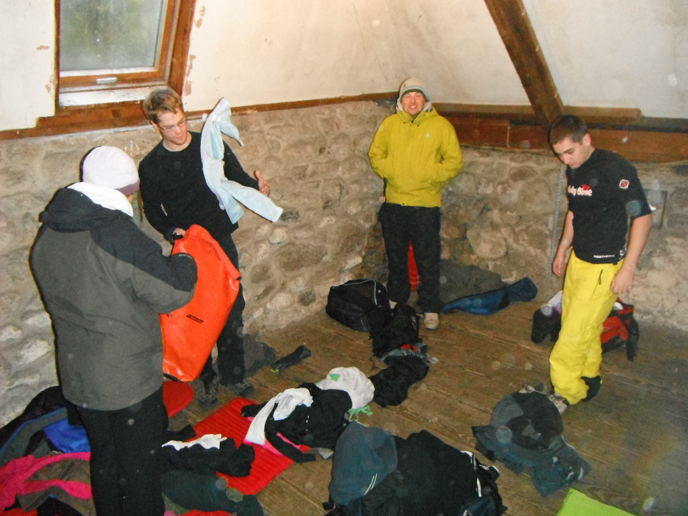
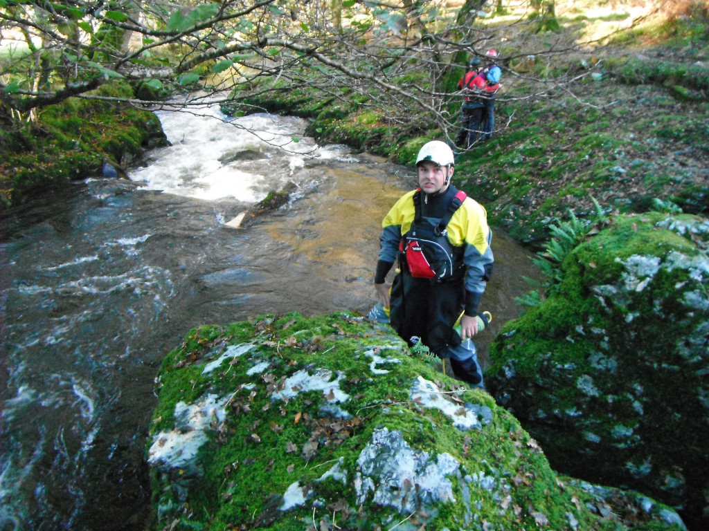
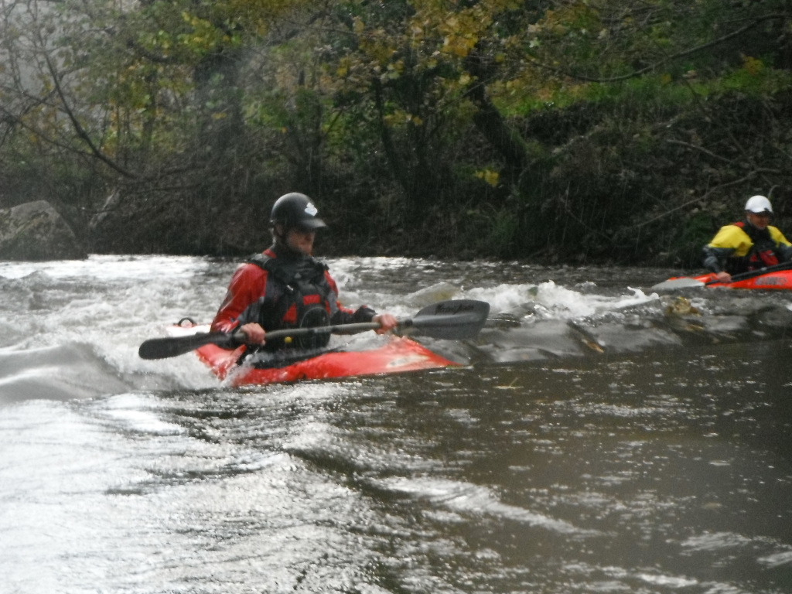

Last weekend was spent in one of the places that I have kayaked the most, dartmoor. Although trips here normally revole around the river dart, normally on the loop and upper this time we found ourselves looking further afield. Paddling with 4 friends from uni on the same weekend that the River Source event the aim was to try and avoid the country park as best we could.

Our accommodation for the weekend was a YHA camping barn which is basic at best, very different to the usual bunkhouses with beds and central heating. This was a barn with some areas for sleeping, a gas camping stove, and a wood burn and that is it. The main advantage of this was that it was dirt cheap, helping keep the cost fo the weekend down.
On Saturday morning we were joined by Rich who for reasons we never really worked out had driven down in the small hours of the morning, and we paddled the Walkham. The river Walkham both me and Richard had paddled before, but for the others this was a new river. The levels were reasonably good, although in places we could have done with a few more cm's. One surprise that we did find was a log stuck just bellow the slot, which was a point of concern, but didn't cause us any issues.

We had originally hoped we would be able to do 2 rivers on the saturday morning, and although we were up bright and early it didn't work out, allowing us only 3 hours until sunset as we reached our get off we headed for a local cafe for some warmth, before heading on to the pub in Princetown.

Sunday morning didn't really go to plan, after going to sleep a bit later than planned as we were sat around the warm fire, followed by the phone we were using as a alarm running out of battery we didn't even wake up until 8:30. The group headed of to see if the River Erme had enough water to run, and although it was on the low side decided it would be runnable. Richard and myself had been lucky enough to have paddled it in the summer when it was higher and decided to give it a miss with Richard joining some of my mates from Bromley Canoe Club who had been down for the River Source Weekend that was taking place at the country park.
I decided to head to a local cafe, and then take a walk up the path to get a few photos of the group heading down the river. We then hit the road home with a short diversion into Exeter to Mill on the Exe to see the Pots Weir and have a meal before heading back to guildford.